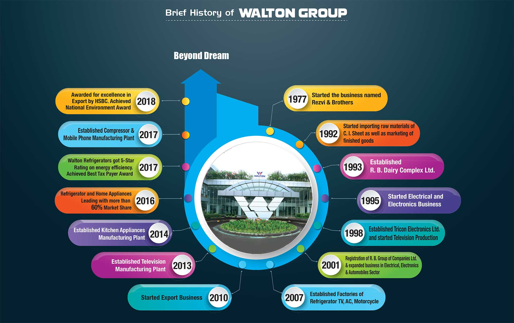
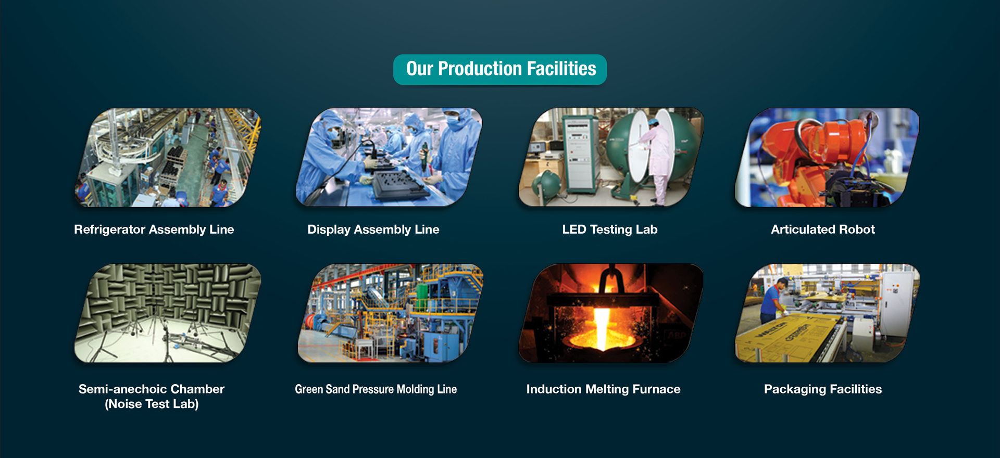

Walton
About
Walton is the latest multinational electrical, electronics, automobiles and other appliances brand with one of the largest well equipped R & I facilities in the world carried out its production through different subsidiaries under the banner of Walton group headquarters in Bangladesh. Today, Walton has a workforce of more than 30000+ in total 22 production bases under 700+ acres of factory area. The capacity of yearly production is 10 million units based on the market demands. Walton is the giant professional manufacturer in the relevant industry and has gained high reputation in terms of its unbeatable capability for producing Electrical and Electronics goods in the most competitive way in aspect of quality, cost, design and innovation.
Vision
Along the way, Walton has earned domestic and global recognition for its experience and proven track record in a variety of electronics fields. Walton is the pioneer of developing state of the art designs and modern technology having leading market share specializing in Multi-Stored Refrigerators, Freezers, Air Conditioners, LED/ LCD televisions, Motorcycles, Smart Phones and Home Appliances. WALTON has established a milestone as the highest exporting Bangladeshi enterprise in the field of electronics, with a universal presence in over 20 countries and by 2020 the presence of Walton will be ensured almost every country in the world.
.jpg)
Our History
Business started since 1977 and early 2008 WHIL started manufacturing of Refrigerator, Freezer, Air Conditioner, Compressor and now onward expanding its operation in Television, Home & Electrical Appliances. Walton & Marcel have become the most trusted and prestigious Brand in the E&E industry in Bangladesh through its strong manufacturing base, quality products, competitive price, extensive market coverage and last but not the least, the prompt after sales services. As a result, within a very short period of time, both the Brands have captured substantial market share and positioned itself as the most dominant performer in the E&E sector in Bangladesh. Product portfolio of WHIL includes Refrigerator (Frost & Non-Frost), Freezer, Air Conditioner, Compressor and Television.

Our Production Facilities
The Manufacturing Plant & Headquarters of WHIL is located at Chandra, Kaliakoir, Gazipur, Bangladesh. The plant is treated as one of the sophisticated manufacturing plants in Bangladesh as well as in South Asia. Walton innovates to build a more advanced, sustainable and environment friendly society through the combination of sophisticated technologies and expertise. The manufacturing plant of WHIL is approx. 5,000,000 sft. of working space consisting of 19 Buildings and Shades.

Certificates
Walton has been maintaining 100% compliances since its inception and certified ISO 14001:2004 Refrigerators & Air Conditioner Division, ISO 9001:2015 Refrigerators & Air Conditioner Division and OHSAS 18001:2007 Certificate for successfully adopting sound occupational health and safety management systems, efficient staff management, minimizing the risk of accidents and achieving adequate corporate reputation ensuring the standard of products and combining the above to minimize the production cost.
Awards
Walton is the No. 1 Manufacturer and Exporter of Refrigerator, Air Conditioner, LED TV, Mobile Phone, Walton has achieved many international & national awards and recognitions like some recent prestigious and best business awards are: The Golden Globe Tiger Award 2015 in the category of Excellence & Leadership Brand, DHL-Daily Star Bangladesh 15th Business Award 2014 for Best Enterprise in Bangladesh, Asia Best Employer Brand Awards in 2015, Six times 1st Prize for Highest VAT Payer at DITF-2015, 2014, 2013, 2012, 2011 & 2010 respectively, Second Prize for Premier Pavilion Category at DITF-2015, Best Refrigerator Brand Award-2014, Best Television Brand Award-2014, Best Local Brand Award-2014, 1st Prize for Premier Pavilion Category at DITF-2014, The Global Brand excellence Award in 2014 for brand excellence in consumer electronics, 1st Prize for Premier Pavilion Category at DITF-2013, Best Sponsor Award-2012, Creative Media Ltd. BABISAS Award-2012, Best Brand (Refrigerator) Award-2011, 2nd Prize for Premier Pavilion Category at DITF-2011, 2nd Prize for Premier Pavilion Category at DITF-2010, 1st Prize for Premier Pavilion Category at DITF-2009, 1st Prize for Premier Pavilion Category at CITF-2005.